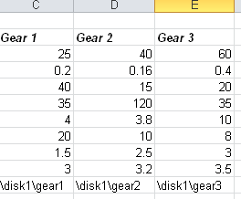
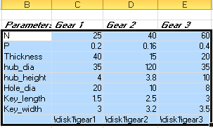

在单元格 C11 – E11中，键入部件族中创建部件的名称，使用齿轮1、齿轮2以及齿轮3作为部件名称。
记住以您有写入权限的路径名作为部件名称起始(例如：/disk1/gear1).

在保存部件族成员到硬盘中之前，必须定义用作部件族的范围。
选择单元格 B3 – E11。

在电子表格的菜单栏中，选择加载项→定义族范围。
既然已经定义了族范围，那么您可以让系统使用这个表格中的数据来创建部件族中每个单独的成员。
选择加载项→构建族，以更新各个部件并保存。
三个部件都将更新并保存到您指定的位置。
退出电子表格，不需要保存电子表格数据。
关闭部件。